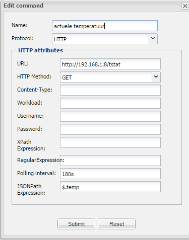
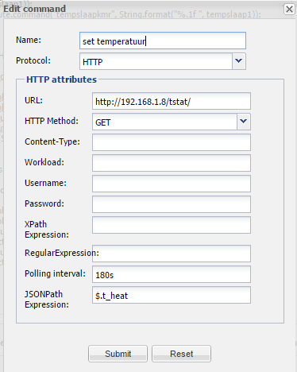
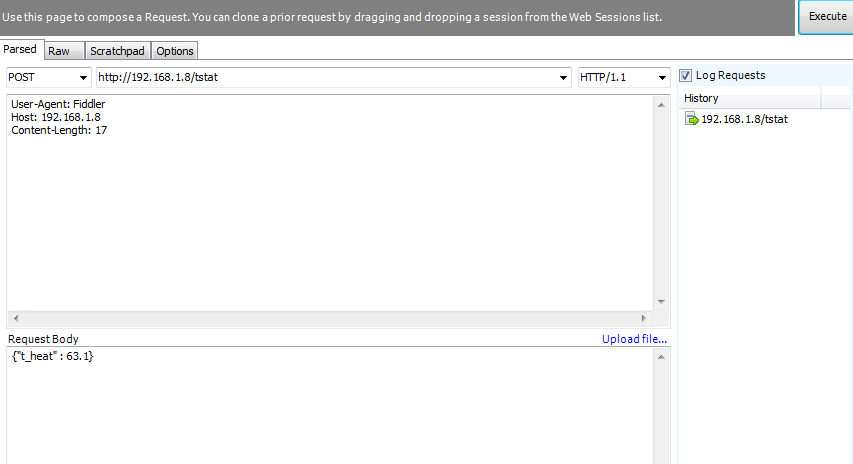
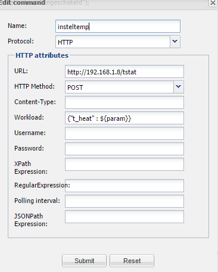

Hello,
i would like to share my experience with the filtrete 3m50 thermostat but i have also a question about a send command.
ive got the filtrete thermostat 3m50 http://www.radiothermostat.com/filtrete/products/3M-50/ and i can read out the temperature from it
here you can find theAPI
create a http GET command as image shows and create a costum sensor for it. in the panel you can now add a label and read out this sensor. it will show the temperature in fahrenheit
the ip adress i used is 192.168.1.8 but that could be different.

to read it out in celcius you will need a rule:
rule "Huidige temperatuur"
when
CustomState(source=="sensor temperatuur", $v: value)
then
double correctedValue1 = Double.parseDouble($v.toString()) - 32;
double correctedValue = (correctedValue1/9) * 5;
execute.command("VTEMP", String.format("%.1f \u2103", correctedValue));
execute.command("VTEMPer", String.format("%.1f ", correctedValue));
temp(String.format("%.1f ", correctedValue));
end
"sensor temperatuur" is the reading sensor, it will do a math (-32 / 9 * 5) to get the celcius format and stores it in a virtual STATUS command called "VTEMP" with the celcius char(°C) behind it and "VTEMPer" without the celcius char. create a costum sensor(no mappings) for these virtual commands to read them in the pannel via a label
you can also read other json values for example the target-temperature
it will also show the temperature in fahrenheit:

if you want to read it out and change it to celcius than use the same rule as mentioned before, just use diffrent names for everything.
my problem is to set the temperature to the thermostat in openremote with a http post command.
i downloaded fiddler to do some tests, see the image below and this works:

it will set the temperature to 65 degrees fahrenheit
i made some pushbuttons which will increase and decrease the target temperature:
rule "Increase Temp"
no-loop
when
$e: Event(source=="temp up", value=="on")
$t: Event(source=="sensor temperatuur")
then
double correctedValueaa = Double.parseDouble($t.getValue().toString()) +0.5;
execute.command("temp up","off");
execute.command("insteltemp", String.format("%.1f", correctedValueaa));
log(String.format("%.1f",correctedValueaa));
end
rule "decrease Temp"
no-loop
when
$e: Event(source=="temp down", value=="on")
$t: Event(source=="sensor temperatuur")
then
double correctedValueaa = Double.parseDouble($t.getValue().toString()) -0.5;
execute.command("temp down","off");
execute.command("insteltemp", String.format("%.1f", correctedValueaa));
log(String.format("%.1f",correctedValueaa));
end
i made a HTTP POST command as below but i will not work, when i change {"t_heat" : {$param}} to a fixed value (change {$param} to 65) and run it via a push button it still not works.

the pushbutton script works because when i make a virtual status command "insteltemp" and and costum sensor i can read the value in the panel via a label.
what is wrong with the http post command?
i also noticed that i cant use the serial and email protocol anymore when creating a new command. its not in the list anymore which was before
{kind=link}
{kind=link}
{kind=link}
{kind=link}
{kind=link}